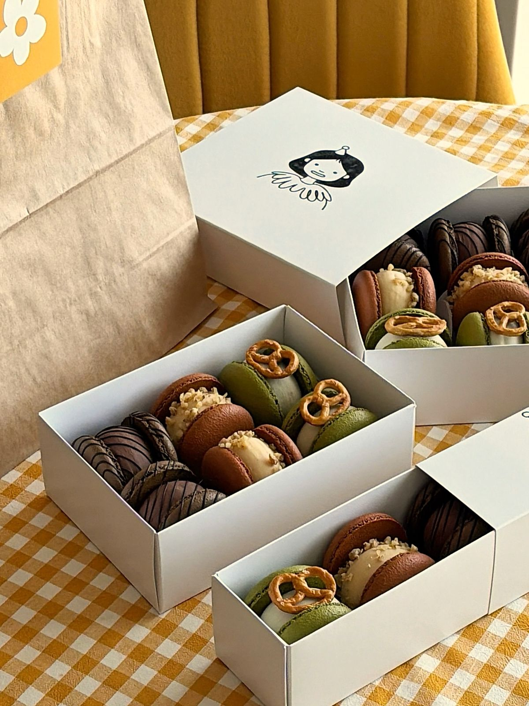
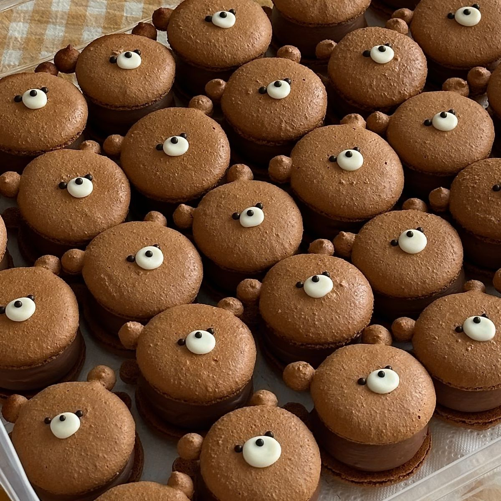
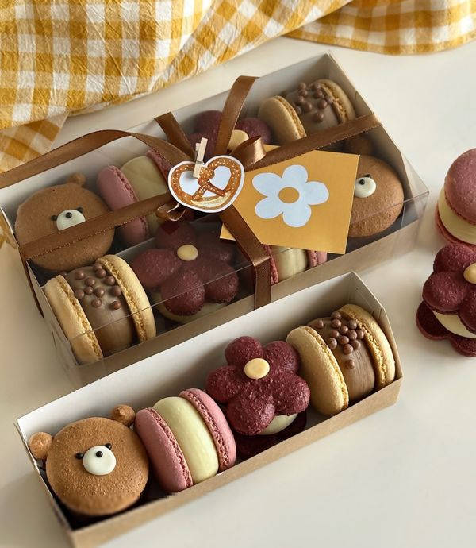
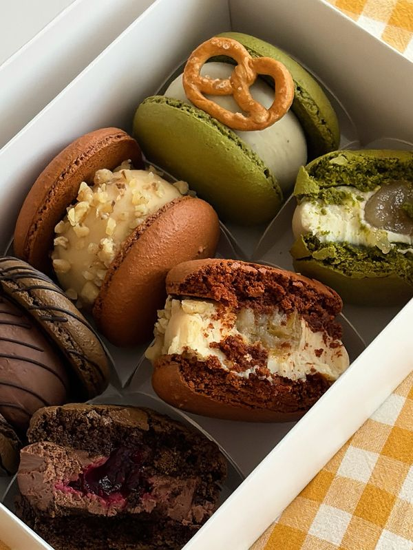
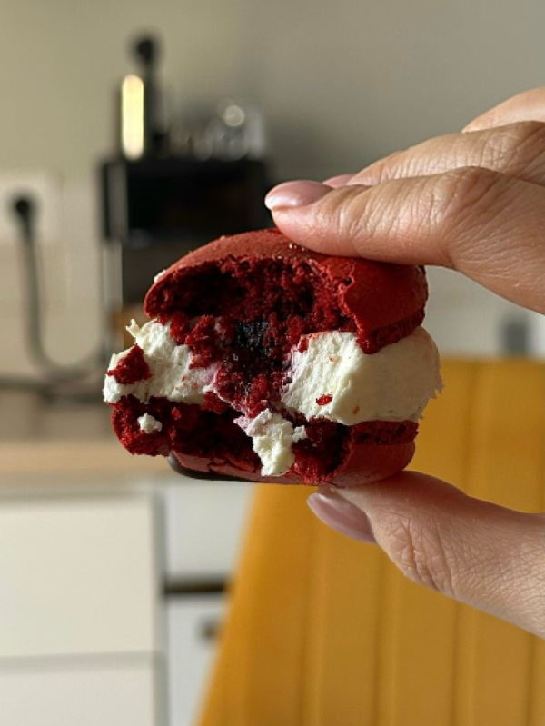
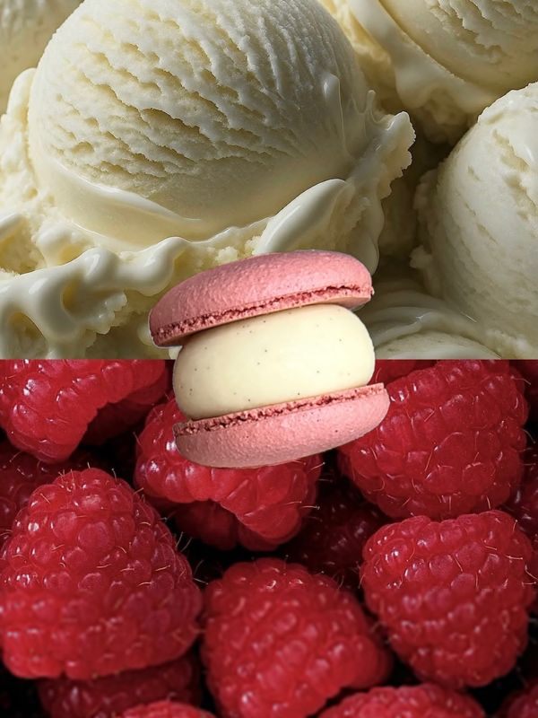
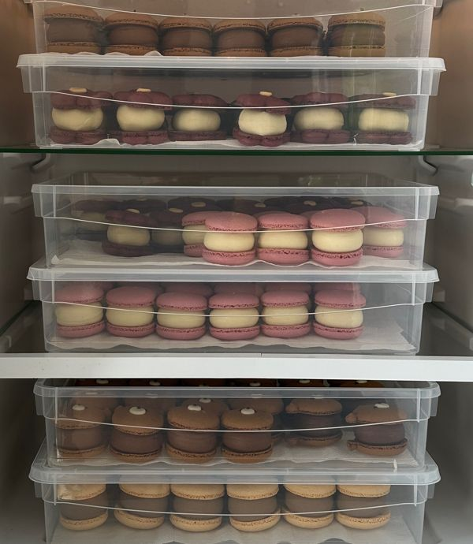
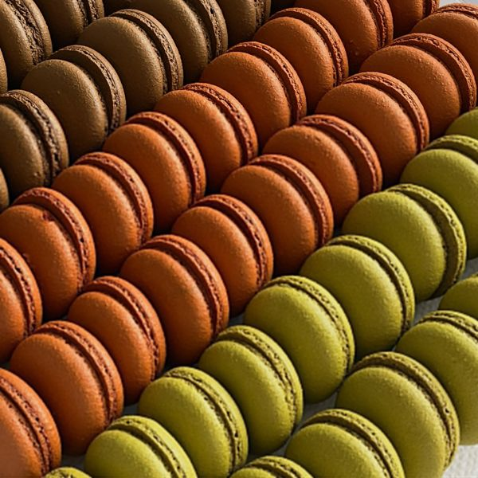
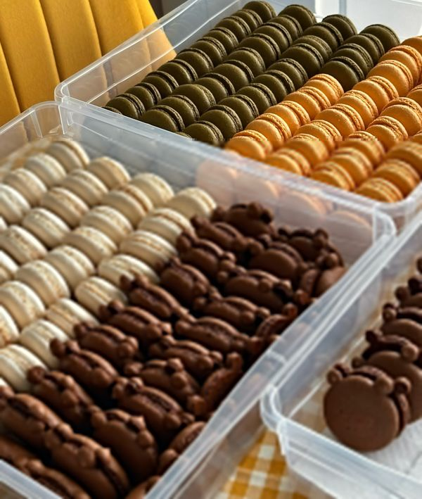

набор ассорти
1200 ₽ / 4 шт
2400 ₽ / 8 шт
Готовая коробочка из четырёх вкусов коллекции. Самый быстрый способ порадовать себя или подарить.
заказать наборПеку небольшими партиями у себя на кухне: мишки с глазками, осенние и праздничные вкусы, белые коробочки на 4, 8 и 12 штук. Забрать можно на Патрокле или получить курьером — уже через 2–3 часа после заявки.
— это ханикаке! Анжелика


Шоколадная скорлупка с ушками, глазки из белого шоколада и плотный ганаш внутри. Мишки стали визитной карточкой ханикаке: их берут на детские дни рождения, в школу «угостить класс» и просто так — потому что невозможно пройти мимо.
Мишек можно добавить в любой набор или заказать целой коробкой на праздник.
хочу мишек«Дети не устояли перед формой мишек, а Саша съел три штуки за раз»
из отзыва мамы
Линейка вкусов обновляется под сезон и праздники. Актуальное наличие — в закреплённых сторис, а здесь три коллекции, которые сейчас можно собрать в коробочку.
Кофейный ганаш и тягучая карамель с щепоткой соли.
Кокосовый крем и молочный шоколад — тот самый вкус батончика, только нежнее.
Ванильный пломбирный ганаш с зёрнышками ванили и малиновым центром.
Цветочная лаванда и кисло-сладкая смородина. Самый «взрослый» вкус набора.
Набор ассорти: 4 шт — 1200 ₽, 8 шт — 2400 ₽
Ганаш на молочном и тёмном шоколаде с яркой кисленькой клюквой. Немного терпкий, взрослый вкус.
Ганаш с солёной карамелью и пряностями, внутри — кусочки яблок, корица и нотка грецкого ореха.
Сливочно-сырный ганаш с солоноватым дорблю и центром из грушевого пюре с кислинкой.
Осенние коробочки на 3, 6 и 9 шт
Сливочный ликёрный ганаш и карамельный центр.
Фисташковая начинка с хрустом — тот самый вкус, ради которого стоят в очередях.
Сливочный сыр, цедра и свежая лимонная кислинка.
Молочный ганаш со злаковым хрустом — как любимая шоколадка из детства.
Наборы на 4, 8 и 12 шт — отличный подарок мужчине
Выберите размер и разложите вкусы по ячейкам. Готовый заказ скопируется — останется вставить его в директ.
нажмите на вкус справа, чтобы положить его в коробку
350 ₽ за штуку, коробочка кратна 4. Наличие вкусов подтвердим в ответе.
1200 ₽ / 4 шт
2400 ₽ / 8 шт
Готовая коробочка из четырёх вкусов коллекции. Самый быстрый способ порадовать себя или подарить.
заказать набор350 ₽ / шт
Минимальный заказ — 4 шт, дальше кратно: 8, 12, 16 и так далее. Вкусы выбираете сами из того, что есть сегодня.
собрать коробочку450 ₽ / шт
От 50 шт: свадьба, корпоратив, кенди-бар, выпускной. Начинки из линейки вкусов и оформление — под ваш праздник.
обсудить заказВ закреплённых «актуальных» — вкусы в наличии, сроки и условия.
Макарон из наличия — от 4 шт, или индивидуальный заказ от 50 шт.
По ссылке в шапке профиля или в директ — с желаемой датой самовывоза или доставки.
После оплаты заказ сформирован — дальше дело за мной.
Меня зовут Анжелика, и я много лет занимаюсь кондитерским делом. Макарон — самый капризный десерт: стоит духовке «гулять» на пару градусов, и скорлупки трескаются.
Поэтому я поставила профессиональный конвектомат. Ровная температура — ровные «юбочки», гладкие шапочки и стабильный вкус в каждой партии.
готовлю так, чтобы хотелось съесть всю коробку







Из наличия — 350 ₽ за штуку, от 4 шт и дальше кратно четырём. Индивидуальный заказ со своими вкусами из линейки и оформлением — 450 ₽ за штуку, от 50 шт. Набор ассорти: 4 шт — 1200 ₽, 8 шт — 2400 ₽.
Если вкусы есть в наличии — примерно через 2–3 часа после оформления заявки. Для индивидуальных заказов от 50 шт дату согласуем заранее.
Да, десерты развозит наш курьер. Можно забрать и самостоятельно — в районе Патрокл, точный адрес пришлю после оформления.
Да, это индивидуальный заказ от 50 штук: выбираете начинки из линейки, цвета и оформление под стиль праздника.
В холодильнике, в закрытой коробке. Перед подачей достаньте за 15–20 минут — начинка станет мягче, а вкус ярче.
Конечно: макарон приезжают в белых коробочках с фирменным рисунком — их не стыдно вручить коллеге, учителю или маме без дополнительной упаковки.